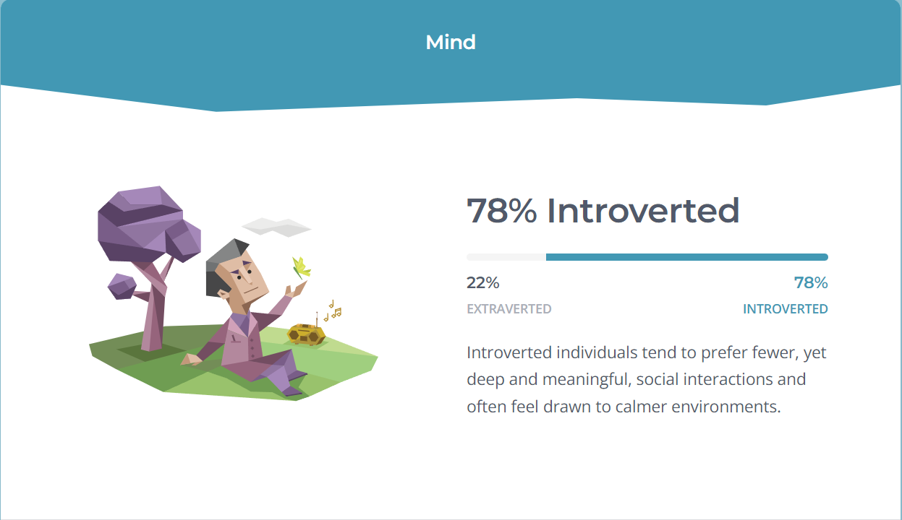
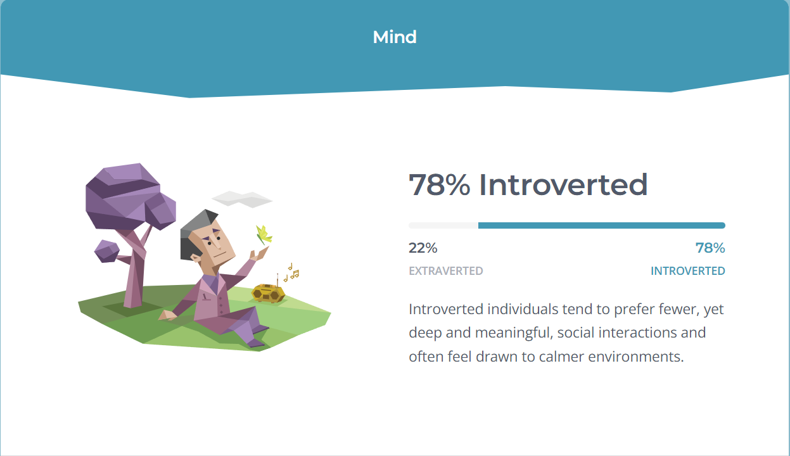

To start things of with my strongerest trait. I'd say im a bit stubborn I cannot just blindly accepted a simple no or can't either you give me a detailed explination or I find out for myself.
If you can't tell already I'm a gamehead like Professional gamehead
- Some of my favorite games are:
- TF2
- Apex Legends
- Fifa
- Red Dead Redemption 2
- Person 5
Now Stubborness and extreme gamehead doesn't mix well. Like how I'm currently doing this project on the same day it's due because any free time I get instantly goes into gaming then I finally decide to do some work
Let's go back to Red Dead for a minute (I love the game too much). One of my favorite sences in all of fiction is the main
character or Red Dead Arthur sitting on a bench with a church women. He is a cowboy....who is also dying of a disease.
Hearing him confess he's afraid the badest outline in the universe of the game saying he is afraid sends chills down my spine.
When he said it I don’t see him as an animated character, I see a real man, with a real soul, even though it’s all fiction. That’s what I call art.
https://www.16personalities.com/free-personality-test
So I was required to do a personality test and here are the results
 

I was tasked with reading, summarizing and reflect chapters 4 - 7 of “Twelve Pillars” by Jim Rohn and Chris Widener
Chapter 4
The value of time and why it's the most valuable resource that we possess are highlighted in this chapter.
It stresses how important it is to manage time well by being disciplined, prioritizing tasks, and making good
use of your time. It's likely that Jim Rohn and Chris Widener talk about productivity, time management, and the
effects of making careful choices about one's time.
Chapter 5
The Influence of Personal Development. They talk on the value of investing in oneself, learning new things all the time, and
improving oneself. The chapter might address issues including the importance of reading, looking for mentors, increasing
knowledge, and learning new abilities in order to succeed.
Chapter 6
The Plan for a Better Future. The main topic of this chapter will be the significance of goal-setting and creating a
strategy to reach those goals. The importance of having a clear vision for the future, establishing goals, and taking
action to fulfill one's ambitions could be covered. It also tackles goal-setting techniques and the importance of
tenacity and resolve in reaching achievement.
Chapter 7
Overcoming Challenges and Adversity. The difficulties and disappointments that are unavoidable when pursuing achievement
are discussed in this section. The writers might go over methods for conquering challenges, building resilience,
and keeping a cheerful outlook in the midst of hardship. They emphasize how crucial it is to grow from mistakes,
adjust to change, and persevere in the face of adversity.